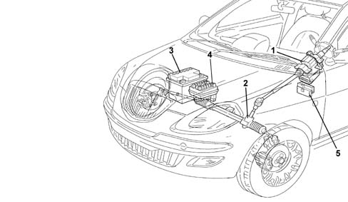
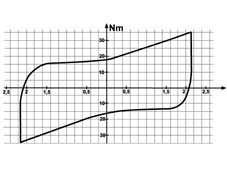
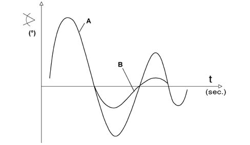
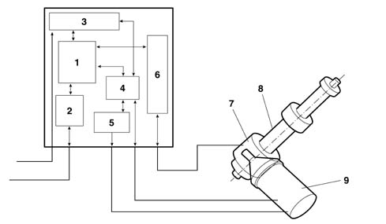
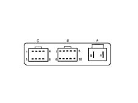
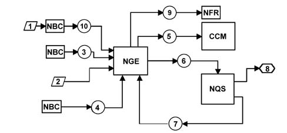
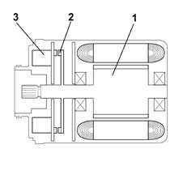
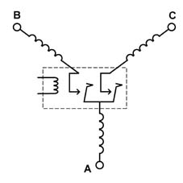
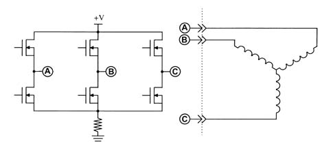
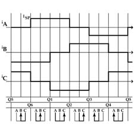

4110D steering electrical control system
- Path
- Descriptions > 41 STEERING > 4110 STEERING CONTROL AND LINKAGE > 4110D steering electrical control system
- Kind
- system description
- Applies to
- all engines; all production periods
- Interactive page
- https://sloeber94.github.io/elrnDB-lYpsln/en/#/2427431
Applies to: all engines; all production periods
The EPS (Electrical Power Steering) produced by DELPHI is a power assisted steering system designed to reduce the effort required on the steering wheel, especially during steering manouevres at low speed, without, however, making the steering too light during normal driving.

1, EPS power steering 2, Mechanical steering box 3, Battery 4, Engine compartment junction unit (B01) 5, Junction unit under the dashboard (B02)
Applies to: all engines; all production periods
Electric power assisted steering offers the following advantages compared with hydraulic power assisted steering:
- The system has a smaller number of components and therefore is lighter and less complex
- It takes less time to install and is simpler to service.
- The electric power assisted steering only absorbs energy when power assisted steering is required, improving the performance of the vehicle and reducing consumption and emissions.
- Greater driving comfort resulting from less operating noise.
- There is a reduction in pollution because the electrical energy used is clean.
- A variation in the power assistance according to the vehicle speed
- The steering returns to the 'Active return' centre
- Damping steering return fluctuations
- Power assisted selection (Normal / City)
Applies to: all engines; all production periods
IMPLEMENTATION STRATEGIES
The following figure shows system operating strategies

Applies to: all engines; all production periods
BASIC OPERATION
According to the driver's requirements (force on the steering wheel) and the speed of the vehicle, the (NGE) control unit operates the electric servomotor which assists the rotation of the steering column. The motor applies a force to the actual steering column, by means of a worm screw mechanism, decreasing the effort required from the driver when steering.
Applies to: all engines; all production periods
The power assistance varies according to the vehicle speed
As the speed of the vehicle increases, the driver proportionally increases the force applied to the steering wheel also because the force resistant to the wheels decreases as the speed of the vehicle increases.
Consequently, making use of the vehicle speed signal, the NGE implements less power assistance.
Applies to: all engines; all production periods
Active return
The return stage refers to the realignment function normally produced by the geometry of the front section of the vehicle when the steering is released after a steering manoeuvre.
This function is designed to make this realignment faster, causing the servo motor to intervene and assist the normal geometry effect.
The active return correction varies according to the speed of the vehicle:
- Maximum at low speeds
- Minimum at high speeds
The servomotor carries out the active return of the steering wheel acording to the steering angle in relation to the centre. The greater the steering angle, the greater the effort of the motor to realign the wheels
Applies to: all engines; all production periods
Damping steering return fluctuations
After the steering wheel is released, following a steering manoeuvre, the vehicle chassis produces oscillations which, if they persist for a certain length of time, can be tiresome.
The servo motor reduces the amplitude of oscillations (B) during the return to the straight line driving position and intervenes more at high speed.

Applies to: all engines; all production periods
Selectable power steering
The user can select between two driving styles by pressing a button located on the control panel:
- 'Normal' for normal power assistance at medium to high speeds,
- 'City' for easier driving whilst parking and at low speeds, thanks to increased power assistance.
Applies to: all engines; all production periods
The following figure shows unit components.

1, Microprocessor 2, CAN interface 3, Supply circuits 4, Engine timing operating circuit (EBMD) 5, Power electronics (FET) 6, Analogue signals interface 7, Position and torque sensor 8, Servo mechanism 9, Electric motor (with engine position sensor and engine relays incorporated)
Applies to: all engines; all production periods
Geared motor
The geared motor unit consists of an aluminium casting fastened to the vehicle chassis.
Positioned at the side of the geared motor casting, the servomotor supplies a torque with a ratio of 22:1, by means of a worm screw, to the power assisted gear.
The geared motor gear, coaxial and joined to the steering column, is made of steel, whilst the outer ring gear is made from pressed plastic. The worm screw and the gear have been designed so that the angles ensure that the coupling is reversible.
The metal part of the gear is fitted on the output shaft, which transmits the steering forces (in other words the torques from the servomotor and the driver).
The input and output shafts are connected to one another by a 'calibrated torsion bar' which allows an angular movement from + 8° to - 8° (mechanical ends of travel prevent a further increase in torsion).
Where there is resistance at the wheels, the input shaft weakens (NOT irreversibly) the torsion bar, therefore the input shaft and the output shaft are offset at an angle proportional to the force applied to the steering wheel.
A torque sensor, fitted inside the geared motor, detects the change in angle, between the input shaft and the output shaft and supplies an electrical signal to the control unit proportional to the shift.
The geared motor casing also has the task of retaining the outer part of the 'torque and position sensor' and, lastly, the input shaft mounting cover is fastened to the casing, where the flywheel is fitted, and houses both the ignition switch and the steering column switch unit.
On the version with an adjustable column, the angle and the axial position can be adjusted on the vehicle.
Applies to: all engines; all production periods
Control unit
The control unit processes the input signals received from the sensors and operates the electric motor, supplying a suitable current for the power assisted force required. It also handles the CAN network communication and carries out a continuous autodiagnosis of the system, to ensure correct operation. It manages communication with the diagnostic equipment on the CAN.
The vehicle and alternator speed values are read from the CAN line.
The position and torque signals coming from the sensors represent the basic values with which the microprocessor processes the output data in terms of current supplied to the engine.
The control unit for the power assisted steering is fixed to the actual steering box and has an interface with the wiring by means of two separate connectors: one 10 pin and one 2 pin.
Applies to: all engines; all production periods
CONTROL UNIT PIN-OUT
The diagram below illustrates the control unit pin out.

Applies to: all engines; all production periods
CONTROL UNIT PIN-OUT
Connector A:
Pin | Function |
|---|---|
A | Batteria + |
B | Battery - |
Connector B:
Pin | Function |
|---|---|
1 | Ignition |
2 | CAN HI 2 |
3 | CAN LO 2 |
4 | k line |
5 | N.C. |
6 | N.C. |
7 | CAN HI |
8 | CAN LO |
9 | N.C. |
10 | N.C. |
Connector C:
Pin | Operation |
|---|---|
1 | P3 (only VDC) |
2 | P1 |
3 | Vref |
4 | T2 |
5 | N.C. |
6 | P2 |
7 | Earth |
8 | T1 |
Applies to: all engines; all production periods
Driving style selection input signal (normal / city) (pin 4)
The Normal / City function has the tsk of varying the assistance torque depending on the speed of the vehicle. It is possible to switch from a standard (Normal) configuration to City using the button in the control panel.
The system only implements the request when the button is released, lighting up the signal, after the driver has applied a force of more than 1 Nm.
During the key off / key on cycle, the control unit maintains the state requested previously by the driver.
The power assistance is always operating, with the CITY function on, it is greater and it decreases as the speed increases.
Applies to: all engines; all production periods
C.A.N. serial line
The control unit is capable of receiving/transmitting information using the CAN network; this interface is working from the key on to the key off.
Applies to: all engines; all production periods
Signals received / sent via the C.A.N. network
The following signals are received via the C.A.N. network from the NGE control unit:
- Car speed
- failure light status
- engine running signal (D+)
- fault diagnosis
- vehicle speed signal error
The following signals are sent to the C.A.N. network by the NGE control unit:
- system status (failure)
- power assisted steering activated signal (EPS Active)
- driving style selection light (Normal / City)
- fault diagnosis
- steering wheel absolute position
Applies to: all engines; all production periods
The following figure shows the system operating layout

1, City driving selection 2, Ignition key 3, Alternator voltage 4, Vehicle speed 5, Steering effort 6, Fault warning light and/or City status send 7, Fault warning light and/or City status return 8, Fault warning light and/or City light 9, Steering angular position signal (only with VDC) 10, city/normal signal from NBC
Applies to: all engines; all production periods
Operating performance
The following table illustrates system operating performance schematically.
INPUT | OUTPUT |
|---|---|
Vehicle speed reading (4) (through CAN network) | Regulates the power assisted steering according to the speed of the vehicle and the recommended torques for the steering wheel. |
Reading (3) Alternator D+ (through CAN network) | By means of this reading, the control module is able to know whether the engine has been started up |
System error | Fault warning light on through the CAN network |
Normal/City selection (included in the system) | According to the driver's request through the button, the system activates the corresponding strategy (hard/soft) and lights up the Normal/City warning light through the CAN network. |
System electrical load (system reading) | The system send this information to the engine control module through the CAN and the module implements the appropriate strategy to adjust engine idle speed. The NGE node control panel can identify time changes in the current taken up by the node during operation. The control panel recognizes when the positive and negative thresholds have been exceeded and retransmits this information via the CAN. |
Applies to: all engines; all production periods
SPECIFCATIONS
The electric motor is the three phase, auto-switching, synchronous type (without blades) with a permanent magnet rotor.
The power distribution and the control of the phases is regulated by the NGE control unit.
Applies to: all engines; all production periods
COMPOSITION
The following figure shows the electric motor components.

Applies to: all engines; all production periods
COMPOSITION
The motor rotor is constructed using permanent magnetic material
There is a disc secured to the motor rotor (1) on which small magnets (2) are fitted, whilst on the fixed, output shaft side, there are three Hall effect semi-conductors: they have the task of notifying the control unit of the angular position of the shaft throughout 360°. Rotor position (orientation) is therefore measured by the position sensors built into the case (Hall-effect sensors) to allow the control unit

Applies to: all engines; all production periods
COMPOSITION
To reduce noise and oscillations at the steering column, the motor is fitted with three insulators for the stator and one for the rotor.
Applies to: all engines; all production periods
Operation
Engine current uptake ranges from 1A to 75A; the maximum absorption conditions occur when the steering box is in the end of travel position
The motor has been designed to provide torque as required, in other words it has been designed to assist the driver according to the effort made on the steering wheel,
The wheels offer different resistance to the steering column depending on whether they are resting on ice or asphalt, for example. As a result, the motor provides the torque according to requirements.

Applies to: all engines; all production periods
Operation
The control unit controls each individual (threephase) winding using a current. As the induction winding consists of permanent magnets, it tends to reach the centre of the magnetic field.
The control unit controls the position of the rotor through the signals sent to it by the Hall effect semi-conductors,
The exact position of the rotor is used by the control unit for passing the (operating) current through the coils concerned and maintaining the motor torque
The operation of the individual coils is carried out using the FET bridge illustrated with an operating frequency of 18 KHz using the PWM (Pulse Width Modular) method for each individual coil.

Applies to: all engines; all production periods
Operation
It is possible to see from the diagram that, when the current is supplied to one winding, it is requested in another, whilst no current passes through the third winding. On switching, the current flows passing through the coils change
The synchronized, auto-switching motor always operates at the torque required by the force exerted by the driver on the steering wheel. As the torque requirement increases, the current value passing through the windings increases proportionally; this value is around zero when the motor does not require any torque.
Applies to: all engines; all production periods
The sensor
The sensor which measures torque and position is fitted in a single casing secured to the geared motor whilst the input and output shafts are free to rotate driving the moving measuring parts.
As stated above, the sensor performs two functions: to measure torque and outlet shaft position. The torque sensor function can be compared to a potentiometer, where the resistive support is secured to the output shaft and the cursor is secured to the input shaft. The torsion movement on the torsion bar between the two shafts determines the torque value applied between the steering wheels
Through the signal from this potentiometer, the control unit is capable of understanding the effort which the driver is exerting on the steering wheel and the torque direction. On the same principle (potentiometer), the sensor measures angular output shaft position in relation to the centre (wheels straight). Through a signal, the control unit is capable of understanding how many degrees the steering wheel has moved in relation to the centre.
On versions with ESP, the sensor also acts as a steering angle sensor and thus computes the number of turns completed by the steering wheel and the number of degrees per turn. Information supplied by the torque/position sensor is sent via the C-CAN from the NGE node to ensure optimum management of the electronic stability control system managed by the NFR.
Applies to: all engines; all production periods
Lower shaft
The connection between the steering column output shaft and the steering box pinion takes place through a telescopic type intermediate shaft, which is attached to the pinion by means of a splined fork with 26 teeth and a screw.
Applies to: all engines; all production periods
Electrical steering system protective fuses
There is a 70A power fuse, in the engine compartment, behind the battery, protecting the system with the control unit supply direct from the battery. The supply controlled by the ignition (+15) is protected by a 10A fuse located on the electro-mechanical control unit connected to the body computer (NPL dashboard connector).